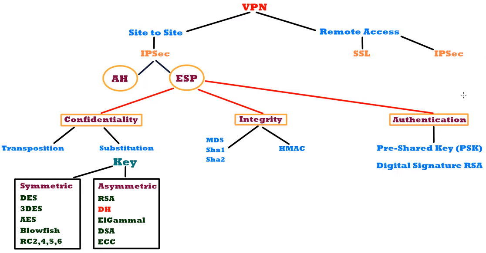
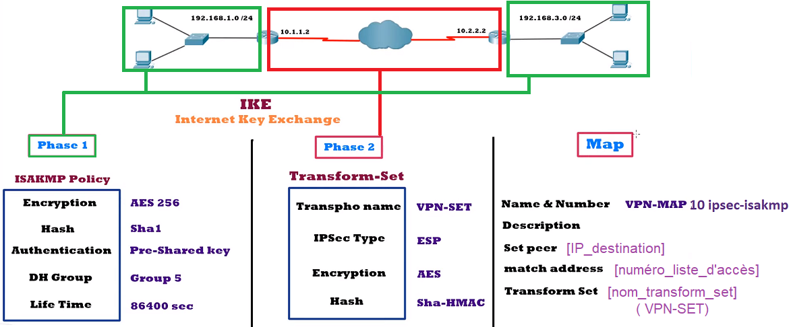

On va onfigurer IPSec sur deux routeurs Cisco, permettant d'établir un tunnel IPSec sécurisé entre les deux réseaux locaux. Ce tutoriel suppose que vous disposez de deux routeurs Cisco configurés avec des adresses IP statiques et une connectivité réseau fonctionnelle. Les commandes et les étapes peuvent varier en fonction de la version et de la configuration de votre routeur.

Configurer la politique ISAKMP
- Connectez-vous à l'interface CLI du routeur Cisco.
- Entrez les commandes suivantes :
crypto isakmp policy 10encryption aes 256hash shaauthentication pre-sharegroup 5lifetime 86400
Définir la clé de pré-partage pour l'authentification
- Connectez-vous à l'interface CLI du routeur Cisco.
- Entrez la commande suivante :
crypto isakmp key [clef_partagée] address [IP_destination_Router2]
- Remplacez [clef_partagée] par une clé alphanumérique partagée entre les deux routeurs, et [IP_destination_Router2] par l'adresse IP publique du deuxième routeur.
Configurer les paramètres IPSec
- Connectez-vous à l'interface CLI du routeur Cisco.
- Entrez la commande suivante :
crypto ipsec transform-set [nom_transform_set] esp-aes 256 esp-sha-hmac
- Remplacez [nom_transform_set] par un nom d'ensemble de transformations.
Configurer les ACLs
- Connectez-vous à l'interface CLI du routeur Cisco.
- Entrez la commande suivante :
access-list [numéro_liste_d'accès] permit gre host [IP_tunnel_Router1] host [IP_tunnel_Router2]
- Remplacez [numéro_liste_d'accès] par un numéro de liste d'accès, [IP_tunnel_Router1] par l'adresse IP du premier routeur et [IP_tunnel_Router2] par l'adresse IP du deuxième routeur.
Créer une carte de cryptage
- Connectez-vous à l'interface CLI du routeur Cisco.
- Entrez les commandes suivantes :
crypto map [nom_crypto_map] 10 ipsec-isakmpset peer [IP_destination_Router2]set transform-set [nom_transform_set]match address [numéro_liste_d'accès]
- Remplacez [nom_crypto_map] par un nom de carte de cryptage et [IP_destination_Router2] par l'adresse IP publique du deuxième routeur.
Appliquer la carte de cryptage à l'interface source
- Connectez-vous à l'interface CLI du routeur Cisco.
- Entrez les commandes suivantes :
interface [interface_source_Router1]crypto map [nom_crypto_map]
- Remplacez [interface_source_Router1] par le nom de l'interface source de votre routeur.